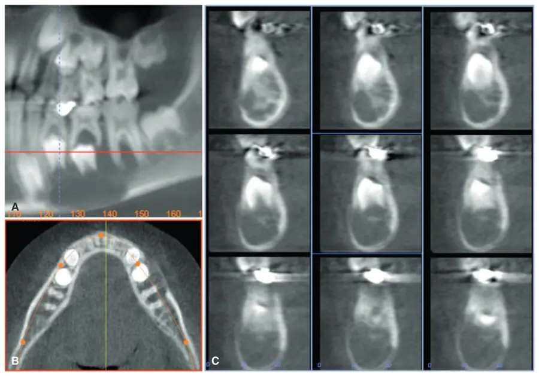
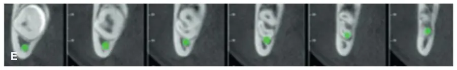

نسخه استخراجشده؛ ترجمه یا تأیید علمی انجام نشده است. وضعیت: captured
نخست یک اعتراف صادقانه: «برخلاف راهنمای تصویربرداری دندانی، راهنمای سفارش تصویربرداری CBCT نسبتاً تازه است و معیارهای انتخابش تا حد زیادی آزموننشدهاند.»

و SEDENTEXCT کیست؟ «یک کنسرسیوم اروپایی از پژوهشگران و رادیولوژیستهای بالینی دهان و فک و صورت که سندی جامع منتشر کرده که به معیارهای انتخاب، تضمین کیفیت، و رویکردهای کمینه کردن دوز پرتویی بیمار میپردازد.» و کارش: «مرور گستردهی ادبیات برای شواهد کاربرد CBCT در دامنهی وسیعی از سناریوهای بالینی.»
و ارزیابی رویکردشان: «رویکرد این گروه بهطور مناسبی محافظهکارانه در کاربرد پرتو یونساز است.»
معاینات CBCT:
و شرط سوم را دقیق بخوان: کافی نیست که CBCT مضر نباشد؛ باید اطلاعات تازهای بیفزاید که بر تشخیص یا مدیریت اثر بگذارد. تصویری که چیزی به دانستههایت اضافه نکند، حتی اگر بیخطر باشد، توجیه ندارد.
درونمایهی نخست: «اگر در گذشته، MDCT مودالیتهی انتخابی برای یک بررسی خاص بافت سخت بوده، اکنون باید CBCT به کار رود.» و دلیلش: «این گزاره به رسمیت میشناسد که دوزهای پرتویی CBCT عموماً کمتر از دوزهای MDCT برای معاینات مشابهاند.»
درونمایهی دوم: «اندازهی میدان تصویربرداری باید تنها به ناحیهی مورد نظر محدود شود و فراتر نرود.» و پیوندش با درونمایهی نخست: «همراستا با درونمایهی اول، میدانهای کوچکتر دوز پرتویی کمتری از میدانهای بزرگتر میدهند.»
و منطق مشترک هر دو درونمایه یکی است: کمترین دوز لازم برای همان اطلاعات. یکی با انتخاب مودالیته و دیگری با محدود کردن حجم.
حکم روشن است: «دندانپزشکانی که انتخاب میکنند سامانههای تصویربرداری پیشرفتهی خودشان را به کار ببرند، باید در همهی جنبههای آن فناوری تصویربرداری مسلط باشند، شامل فیزیک تصویربرداری، تولید آرتیفکت تصویری، بازسازی تصویر، و از همه مهمتر، تفسیر هر ناهنجاری موجود.»
و نتیجهگیریاش: «بهطور کلی، این موضوعات دانش و آموزش تخصصی میخواهند؛ از این رو دندانپزشکان باید ارجاع بیمارانشان به یک متخصص رادیولوژی دهان و فک و صورت برای این روشها را در نظر بگیرند.»
و پیش از فهرست، الگویش را بشناس: در این چهارده توصیه، داخلدهانی برای شروع و پیگیری بدون علامت و CBCT با میدان محدود برای مسائل حلنشده است — همان الگویی که در توصیههای ایمپلنت هم دیدی.

و توصیههای ۱، ۵ و ۱۳ را کنار هم بگذار: ارزیابی اولیه، تصویر فوری پس از عمل، و پیگیری بدون علامت — هر سه داخلدهانیاند. CBCT برای ابهام، پیچیدگی، شکست، و عارضه است.
و شرطش: پنلی از رادیولوژیستها و ارتودنتیستها «چند موقعیت بالینی خاص را شناسایی کرد که میتوانند بالقوه از تصویربرداری CBCT فراتر از آنچه تصویربرداری دوبعدی با پانورامیک و سفالومتریک لترال میدهد سود ببرند».
این هفت توصیه، نقشهی انتخاب مودالیته در مفصلاند:
و منطق پنهان این هفت توصیه را ببین: بافت سخت ← CT و ترجیحاً CBCT؛ بافت نرم و دیسک ← MRI؛ غربالگری اولیه ← پانورامیک. و بدخیمی ← CT یا MRI، چون هم گسترهی استخوانی و هم درگیری بافت نرم مهم است.
و یک نکتهی ظریف در توصیهی چهارم: وزندهی MRI با پرسش بالینی تغییر میکند — T1 یا PD برای موقعیت دیسک، و T2 برای افیوژن؛ چون مایع در T2 روشن است.